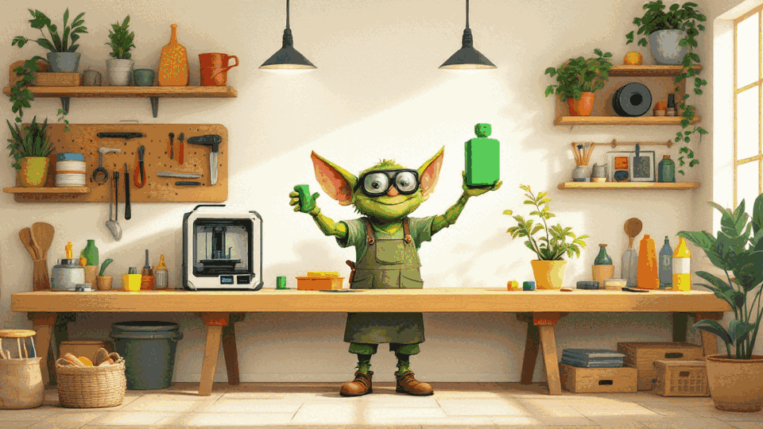
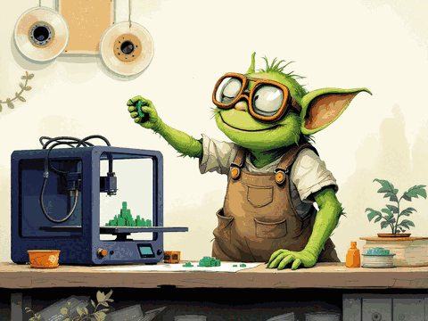
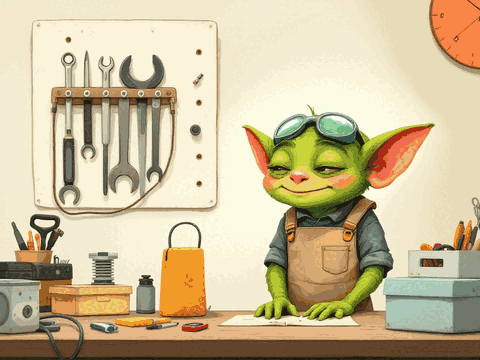
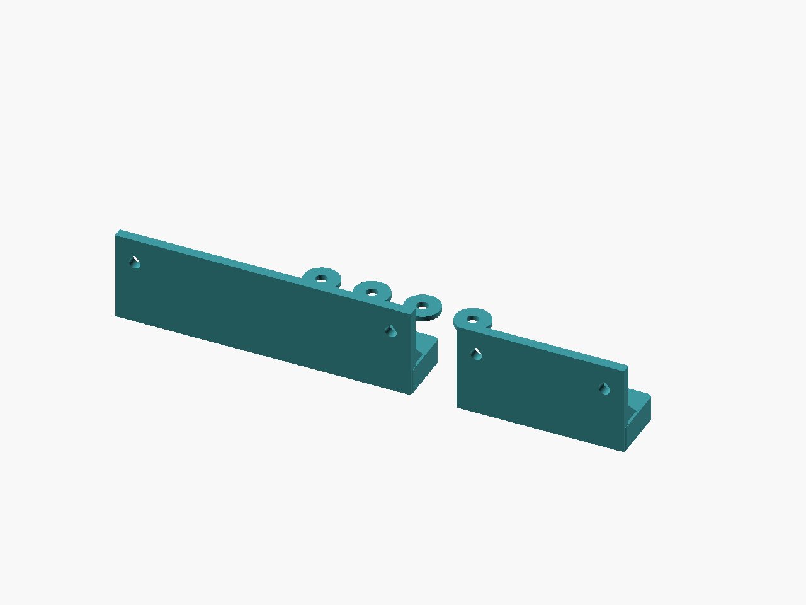

Cable order
Loomfork
Open cable guides. Drop a cable in, lift it out, adjust the source to fit.
Original parametric 3D-print designs
We make editable, printable designs for the bits of a workshop that need a better fit: cable combs, tool holders, spool-core desiccant baskets, rack panels and tape storage.
Digital files. Editable OpenSCAD source. A little goblin ingenuity.

WHAT WE MAKE
5 design families. 27 STL exports.
Made to inspect, adjust and print.
Cable order
Open cable guides. Drop a cable in, lift it out, adjust the source to fit.

Filament care
Vented baskets for intact desiccant sachets, with sliding caps and two core sizes.

Tools within reach
Two bolted pegboard decks for metric hex keys. Fit strips come first.

Rack details
Parametric 1U keystone faces, split panels and blanks for nominal 10 and 19 inch racks.

Desk staging
An open staging rack for bare LTO cartridges, with a coupon and footprint gauge.
FROM FILE TO FIT
Measure the cable, key or spool core you actually own. Every family ships a small test coupon so the first print is quick and cheap.
Open the OpenSCAD source and change a dimension. The parametric model rebuilds around your numbers.

03 — PRINTExport your STL, print the coupon, check the fit, tune and repeat before printing the full part.

04 — TIDYKeys in reach, cables in line, desiccant in the spool core. Small, useful, and yours to remix.
GALLERY
Real CAD renders of every design set.
Select one to see its files.





Still on the digital bench. The models have computational checks; physical print and fit trials are pending. Product images are CAD renders; the goblin scenes are illustrations.